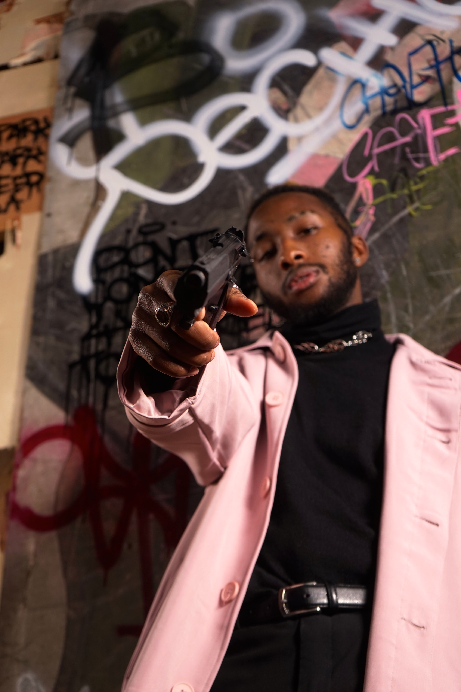
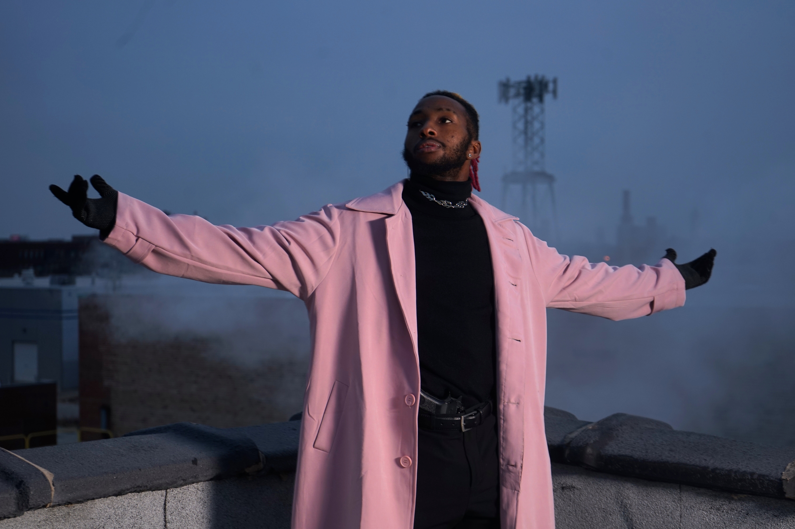
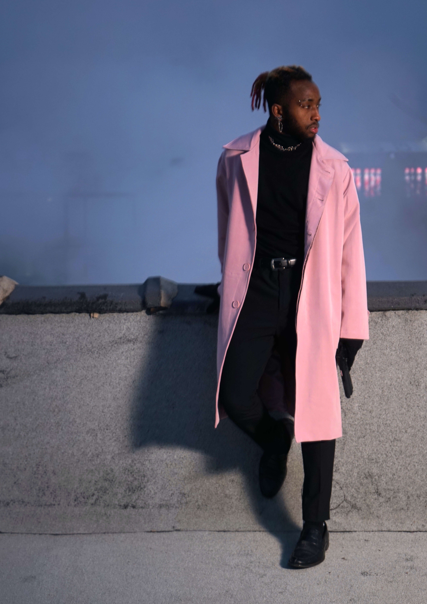

Chicago underground trap metal / founder-built system
Gray Skyes
A catalog wall, a video room, a black-room gallery, and the 0S creator lane held inside one artist universe.
14canonical songs
2video rooms
9artist images
0Sbuilt by Gray
feature video
Chicago's Underground Trap Metal King
The full music video gets its own room and also bleeds back into the hub as a living signal. The page opens with the video already moving, then carries the posts and identity notes around it.
looping room
Full video surface
song vault
Catalog wall
black room gallery
Still pressure







operator lane
The artist who built the 0S
Gray is the artist in the room and the architect behind the rooms. The hub treats that as the story: music, visuals, release control, dashboard edits, and the operating system all orbit the same founder voice.
builder signal
0S spine / artist surface
field notes